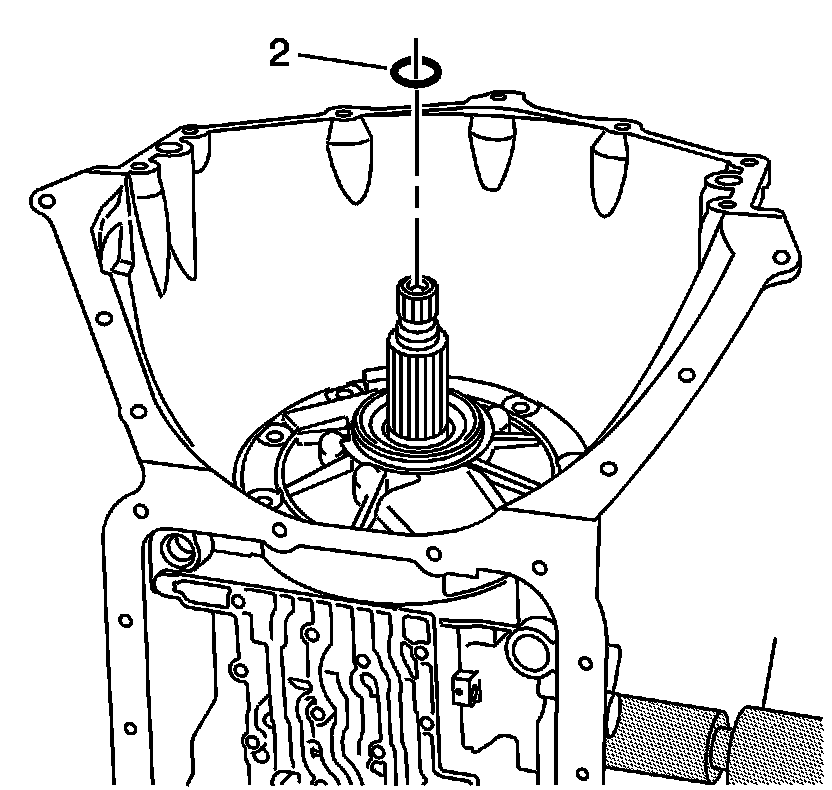

Transmission Oil Pump Assembly Removal
Transmission Oil Pump Assembly Removal
Tools Required
^ J 23129 Universal Seal Remover
^ J 6125-1B Slide Hammer
^ J 45053 Universal Clamp Press

1. Remove the turbine shaft front oil seal ring (2).
2. Using the J 23129 and the J 6125-1B, remove the torque converter oil seal assembly (201).
3. Remove the 7 oil pump bolt and seal assemblies (3).
4. Attach the J 45053 to the oil pump shaft. Tighten the bolts.
5. Turn the handle of the J 45053 down onto the turbine shaft in order to raise the oil pump assembly (4) out of the case.
6. Remove the oil pump assembly (4).
7. Remove the J 45053.
8. Remove the transmission oil pump gasket (6).
Important: The selective thrust washer (218) may be stuck to the pump cover.
9. Remove the selective thrust washer (218).